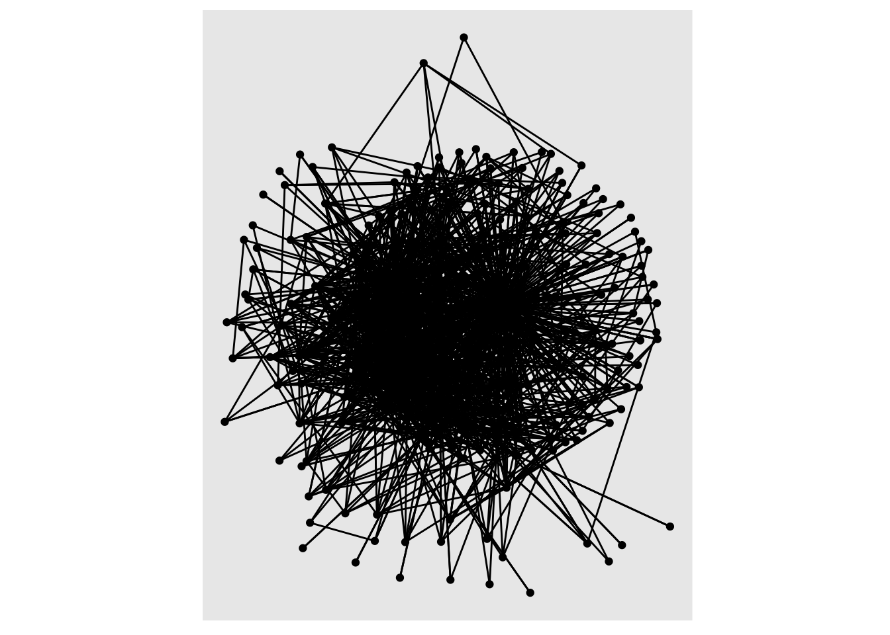

install.packages("tidyverse")
install.packages("igraph") Unit 3: Components, Cliques, & Key Actors
ECI 589 Social Network Analysis and Education
1. PREPARE
The primary goal in this case study is to examine the use of different algorithms to analyze a network’s groups and individual actors. Using an open educational dataset prepared by Kellogg and Edelman Kellogg and Edelmann (2015), we’ll explore both “top-down” and “bottom-up” approaches to identifying groups within our network, as well as node-level measures of centrality to identify key actors. Specifically, the Unit 3 case study will cover the following topics:
Prepare: Prior to analysis, we’ll take a look at the context from which our data came, formulate simple research questions to guide our analysis, and load some by now familiar R packages for network analysis.
Wrangle: Wrangling data entails the work of manipulating, cleaning, transforming, and merging data. In section 2 we focus on importing network data, and converting edge and node lists into a network object that can be analyzed and graphed.
Explore: In section 3, we look at components and cliques within our network, and learn how to add add summarize important node-level measures of centrality.
Model: While we won’t dig into approaches for modeling network data until Unit 4, we will take a quick look at some approaches used in the research article guiding this study.
Communicate: Finally, you’ll prepare a simple “data product” consisting of a data visualization and/or table that highlights some key findings from our analysis.
1a. Review the Research
In Social Network Analysis and Education: Theory, Methods & Applications, Carolan (2013) notes that:
the social network perspective is one concerned with the structure of relations and the implication this structure has on individual or group behavior and attitudes
More specifically, Carolan cites the following four features used by Freeman (2004) to define the social network perspective:
Social network analysis is motivated by a relational intuition based on ties connecting social actors.
It is firmly grounded in systematic empirical data.
It makes use of graphic imagery to represent actors and their relations with one another.
It relies on mathematical and/or computational models to succinctly represent the complexity of social life.
For Unit 3, our case study is guided by previous research and evaluation work conducted by the Friday Institute for Educational Innovation as part of the Massively Open Online Courses for Educators (MOOC-Ed) initiative. The study introduced next and our hands-on analysis with R will help to illustrate these four defining features of the social network perspective.
A Social Network Perspective in MOOC-Eds

Kellogg, S., Booth, S., & Oliver, K. (2014). A social network perspective on peer supported learning in MOOCs for educators. International Review of Research in Open and Distributed Learning, 15(5), 263-289.
Research Context
In the spring of 2013, The Friday Institute launched the MOOC-Ed Initiative to explore the potential of delivering personalized, high-quality professional development to educators at scale (Kleiman et al., 2013). In collaboration with the Alliance for Excellent Education, the Friday Institute launched this initiative with a 6-week pilot course called Planning for the Digital Learning Transition in K-12 Schools (DLT 1), which was offered again in September 2013 (DLT 2). This course was designed to help school and district leaders plan and implement K-12 digital learning initiatives.
Academics, as well as pundits from traditional and new media, have raised a number of concerns about MOOCs, including the lack of instructional and social supports. Among the core design principles of MOOC-Eds are collaboration and peer-supported learning. It is an assumption of this study that challenges arising form this problem of scale can be addressed by leveraging these massive numbers to develop robust online learning communities.
This mixed-methods case study used both SNA and qualitative methods to better understand peer support in MOOC-Eds through an examination of the characteristics, mechanisms, and outcomes of peer networks. Findings from this study demonstrate that even with technology as basic as a discussion forum, MOOCs can be leveraged to foster these networks and facilitate peer-supported learning. Although this study was limited to two unique cases along the wide spectrum of MOOCs, the methods applied provide other researchers with an approach for better understanding the dynamic process of peer supported learning in MOOCs.
Data Sources
MOOC-Ed registration form. All participants completed a registration form for each MOOC-Ed course. The registration form consists of self-reported demographic data, including information related to their professional role and work setting, years of experience in education, and personal learning goals.
MOOC-Ed discussion forums. All peer interaction, including peer discussion, feedback, and reactions (e.g., likes), take place within the forum area of MOOC-Eds, which are powered by Vanilla Forums. Because of the specific focus on peer supported learning, postings to or from course facilitators and staff were removed from the data set. Finally, analyses described below exclude more passive forms of interactions (i.e., read and reaction logs), and include only postings among peers.
For our Unit 3 case study, we’ll take a look at data from the original Digital Learning Transition in K-12 Schools (DLT 1) that was not included in this study. For your independent analysis next week, you may want to consider working with the DLT 2 data to see if you can replicate some of the findings from this paper!
Note: In the data we’re using, instructors have not yet been removed and only direct replies to forum posts have been included, though “weaker” ties like reactions with emoticons and even views of posts were captured in this study.
üëâ Your Turn ‚§µ
Take a quick look at the Description of the Dataset section from the Massively Open Online Course for Educators (MOOC-Ed) network dataset BJET article and the accompanying data sets stored on Harvard Dataverse that we’ll be using for this case study.
In the space below, type a brief response to the following questions:
What were some of the steps necessary to construct the edges in this dataset?
- YOUR RESPONSE HERE
What “node attributes” are included in this dataset? How might they be used for analysis?
- YOUR RESPONSE HERE
What else do you notice/wonder about this dataset?
- YOUR RESPONSE HERE
1b. Identify a Question(s)
A Social Network Perspective on Peer Supported Learning was framed by three primary research questions related to peer supported learning:
What are the patterns of peer interaction and the structure of peer networks that emerge over the course of a MOOC-Ed?
To what extent do participant and network attributes (e.g., homophily, reciprocity, transitivity) account for the structure of these networks?
To what extent do these networks result in the co-construction of new knowledge?
For Unit 3, our exploratory analysis is guided by RQ1 from the original study with an additional emphasis on examining groups and key actors that emerge in the discussion forums for the first and second implementation of the Digital Learning Transition MOOC-Eds. Specifically, for our case we’re interested in the following questions examining groups and key actors:
- How many network components and cliques are in first and second iteration of DLT 1 and DLT 2?
- Which actors are central to each of these networks and what attributes, if any, do they share?
üëâ Your Turn ‚§µ
Based on what you know about networks and the context so far, what other research question(s) might ask we ask in this context that a social network perspective might be able to answer?
- YOUR RESPONSE HERE
1c. Load Libraries
As highlighted in Chapter 6 of Data Science in Education Using R (DSIEUR):
Packages are shareable collections of R code that can contain functions, data, and/or documentation. Packages increase the functionality of R by providing access to additional functions to suit a variety of needs.
You should see installed some familiar tidytext packages from our Getting Started Walkthrough like {dplyr} and {readr} which we’ll be using again shortly. You should also see an important package call {igraph} that we will rely on heavily for our network analyses in this course.
If you are working in RStudio Desktop, or notice that the packages have not been installed and/or loaded, run the following install.packages() function code to install the {tidyverse} and {igraph} packages:
üëâ Your Turn ‚§µ
Use the library() function and the code chunk below and load the following packages:
- tidyverse
- igraph
- tidygraph
- ggraph
- skmir
- janitor
# YOUR CODE HERE
library(tidyverse)
library(igraph)
library(tidygraph)
library(ggraph)
library(skimr)
library(janitor)RStudio Tip: You can always check to see which packages have already been installed and loaded into RStudio Cloud by looking at the the Files, Plots, & Packages Pane in the lower right hand corner of RStudio as shown in the following screenshot:

2. WRANGLE
In general, data wrangling involves some combination of cleaning, reshaping, transforming, and merging data (Wickham and Grolemund 2016). The importance of data wrangling is difficult to overstate, as it involves the initial steps of going from the raw data to a dataset that can be explored and modeled (Krumm, Means, and Bienkowski 2018).
For our data wrangling this week, we’re keeping it simple since working with network data is a bit of a departure from our working with rectangular data frames. Our primary goals for Section 2 are learning how to:
Import Lists. An obvious and also important first step, we need to “read” our data into R and learn about formatting for edge-lists and node attribute files.
Create a Graph Object. Before performing network analyses, we’ll need to convert our data frames into a graph object for working with relational data.
2a. Import Data
The Edge-List Format
To get started, we need to import, or “read”, our data into R. The function used to import your data will depend on the file format of the data you are trying to import, but R is pretty adept at working with many files types.
Take a look in the /data folder in your Files pane. You should see the following .csv files:
dlt1-edges.csvdlt1-nodes.csv
The first file dlt1-edges.csv is an edge-list that contains information about each tie, or relation between two actors in a network. In this context, a “tie” is a reply by one participant in the discussion forum to the post of another participant – or in some cases to their own post! These ties between a single actor are called “self-loops” and as we’ll see later, {tidygraph} has a special function to remove these self loops from a sociogram, or network visualization.
The edge-list format is slightly different than other formats you have likely worked with before in that the values in the first two columns each row represent a dyad, or tie between two nodes in a network. An edge-list can also contain other information regarding the strength, duration, or frequency of the relationship, sometime called “weight”, in addition to other “edge attributes.”
In addition to our Sender and Reciever dyad pairs, our DLT 1 dataset contains the following edge attributes:
Sender= Unique identifier of author of commentReceiver= Unique identifier of identified recipient of commentTimestamp= Time post or reply was postedParent= Primary category or topic of threadCategory= Subcategory or subtopic of threadThread_id= Unique identifier of a threadComment_id= Unique identifier of a comment\
Let’s use the read_csv() function from the {readr} and {janitor} packages introduced in previous units to read in our edge-list and clean up the variables names:
dlt1_ties <- read_csv("data/dlt1-edges.csv",
col_types = cols(Sender = col_character(),
Receiver = col_character(),
`Category Text` = col_skip(),
`Comment ID` = col_character(),
`Discussion ID` = col_character())) |>
clean_names()
dlt1_ties# A tibble: 2,529 × 9
sender receiver timestamp discussion_title discussion_cate… parent_category
<chr> <chr> <chr> <chr> <chr> <chr>
1 360 444 4/4/13 16:… Most important … Group N Units 1-3 Disc…
2 356 444 4/4/13 18:… Most important … Group D-L Units 1-3 Disc…
3 356 444 4/4/13 18:… DLT Resources—C… Group D-L Units 1-3 Disc…
4 344 444 4/4/13 18:… Most important … Group O-T Units 1-3 Disc…
5 392 444 4/4/13 19:… Most important … Group U-Z Units 1-3 Disc…
6 219 444 4/4/13 19:… Most important … Group M Units 1-3 Disc…
7 318 444 4/4/13 19:… Most important … Group M Units 1-3 Disc…
8 4 444 4/4/13 19:… Most important … Group N Units 1-3 Disc…
9 355 356 4/4/13 20:… DLT Resources—C… Group D-L Units 1-3 Disc…
10 355 444 4/4/13 20:… Most important … Group D-L Units 1-3 Disc…
# … with 2,519 more rows, and 3 more variables: discussion_identifier <chr>,
# comment_id <chr>, discussion_id <chr>Note the addition of the col_types = argument for changing the column types to character strings since the numbers for those particular columns indicate actors (Sender and Reciever) and attributes (Comment_ID and Discussion_Id). We also skipped the Category Text since this was left blank for deidentification purposes.
üëâ Your Turn ‚§µ
Consider the example pictured below of a discussion thread from the Planning for the Digital Learning Transition in K-12 Schools (DLT 1) where our data orginated. This thread was initiated by participant I, so the comments by J and N are considered to be directed at I. The comment of B, however, is a direct response to the comment by N as signaled by the use of the quote-feature as well as the explicit mentioning of N’s name within B’s comment.
Now answer the following questions as they relate to the DLT 1 edge-list we just read into R.
Which actors in this thread are the
Senderand theReciever? Which actor is both?- YOUR RESPONSE HERE
How many dyads are in this thread? Which pairs of actors are dyads?
- YOUR RESPONSE HERE
Sidebar: Unfortunately, these types of nuances in discussion forum data as illustrated by this simple example are rarely captured through automated approaches to constructing networks. Fortunately, the dataset you are working with was carefully reviewed to try and capture more accurately the intended recipients of each reply.
Node Attributes
The second file we’ll be using contains all the nodes or actors (i.e., participants who posted to the discussion forum) as well as some of their attributes such as gender and years of experience in education.
Carolan (2013) notes that most social network analyses include variables that describe attributes of actors, ones that are either categorical (e.g., sex, race, etc.) or continuous in nature (e.g., test scores, number of times absent, etc.). These attributes that can be incorporated into a network graph or model, making it more informative and can aid in testing or generating hypotheses.
These attribute variables are typically included in a rectangular array, or dataframe, that mimics the actor-by-attribute that is the dominant convention in social science, i.e. rows represent cases, columns represent variables, and cells consist of values on those variables.
As an aside, Carolan also refers to this historical preference by researchers for “actor-by-attribute” data, in the absence of relational data in which the actor has been removed their social context, as the “sociological meatgrinder” in action. Specifically, this historical approach assumes that the actor does not interact with anyone else in the study and that outcomes are solely dependent of the characteristics of the individual.
üëâ Your Turn ‚§µ
Use the code chunk below to import the dlt1-nodes.csv attribute file and be sure to set the following variables as character data types: UID, Facilitator, expert, connect.
# YOUR CODE HERE
dlt1_actors <- read_csv("data/dlt1-nodes.csv",
col_types = cols(UID = col_character(),
Facilitator = col_character(),
expert = col_character(),
connect = col_character())) |>
clean_names()Now use the code chunk below to inspect the data you imported and complete the matching exercise that follows:
#YOUR CODE HERE
dlt1_actors# A tibble: 445 × 13
uid facilitator role1 experience experience2 grades location region country
<chr> <chr> <chr> <dbl> <chr> <chr> <chr> <chr> <chr>
1 1 0 libm… 1 6 to 10 secon… VA South US
2 2 0 clas… 1 6 to 10 secon… FL South US
3 3 0 dist… 2 11 to 20 gener… PA North… US
4 4 0 clas… 2 11 to 20 middle NC South US
5 5 0 othe… 3 20+ gener… AL South US
6 6 0 clas… 1 4 to 5 gener… AL South US
7 7 0 inst… 2 11 to 20 gener… SD Midwe… US
8 8 0 spec… 1 6 to 10 secon… BE Inter… BE
9 9 0 clas… 1 6 to 10 middle NC South US
10 10 0 scho… 2 11 to 20 middle NC South US
# … with 435 more rows, and 4 more variables: group <chr>, gender <chr>,
# expert <chr>, connect <chr>Match up the attributes included in the node file with the following codebook descriptors. The first one has been done as an example.
Facilitator= Identification of course facilitator (1 = instructor)- Dummy variable for whether participants listed networking and collaboration with others as one of their course goals on the registration form
- Identifier of “expert panelists” invited to course to share experience through recorded Q&A
- Identification of course facilitator (1 = instructor)
- Professional role (eg, teacher, librarian, administrator)
- Years of experience as an educator
- Works with elementary, middle, and/or high school students
- Initial assignment of discussion group
RStudio Tip: Importing data and dealing with data types can be a bit tricky, especially for beginners. Fortunately, RStudio has an “Import Dataset” feature in the Environment Pane that can help you use the {readr} package and associated functions to greatly facilitate this process.

2b. Create Network Object
As demonstrated in our previous case study, we first need to convert the data frames that we imported into an network object before we can begin using many of the functions from our network packages for summarizing and visualizing our DLT 1 network.
Convert to Graph Object
To do that, we will use the tbl_graph() function from the {tidygraph} package. Note that I included the eval=FALSE argument in the code block below to prevent this code from running when we knit our final document. Otherwise it will produce an error since we can’t include help documentation in our knitted HTML file.
Run the following code to take a look at the help documentation for this function:
?tbl_graphYou probably saw that this particular function takes the following three arguments, two of which are data frames:
edges =Adata.framecontaining information about the edges in the graph. The terminal nodes of each edge must either be encoded in atoandfromcolumn, or be in the two first columns.nodes =a node list that starts with a column of node IDs. Any following columns are interpreted as node attributes.node_key =The name of the column innodesthat character representedtoandfromcolumns should be matched against.directed =determines whether or not to create a directed graph.
Run the following code to specify our ties data frame as the edges of our network, our actors data frame for the vertices of our network and their attributes, and indicate that this is indeed a directed network.
dlt1_network <- tbl_graph(edges = dlt1_ties,
nodes = dlt1_actors,
node_key = "uid",
directed = TRUE)üëâ Your Turn ‚§µ
Take a look at the output for our dlt1_network and answer the questions that follow:
#YOUR CODE HERE
dlt1_network# A tbl_graph: 445 nodes and 2529 edges
#
# A directed multigraph with 4 components
#
# Node Data: 445 × 13 (active)
uid facilitator role1 experience experience2 grades location region country
<chr> <chr> <chr> <dbl> <chr> <chr> <chr> <chr> <chr>
1 1 0 libm… 1 6 to 10 secon… VA South US
2 2 0 clas… 1 6 to 10 secon… FL South US
3 3 0 dist… 2 11 to 20 gener… PA North… US
4 4 0 clas… 2 11 to 20 middle NC South US
5 5 0 othe… 3 20+ gener… AL South US
6 6 0 clas… 1 4 to 5 gener… AL South US
# … with 439 more rows, and 4 more variables: group <chr>, gender <chr>,
# expert <chr>, connect <chr>
#
# Edge Data: 2,529 × 9
from to timestamp discussion_title discussion_cate… parent_category
<int> <int> <chr> <chr> <chr> <chr>
1 360 444 4/4/13 1… Most important … Group N Units 1-3 Disc…
2 356 444 4/4/13 1… Most important … Group D-L Units 1-3 Disc…
3 356 444 4/4/13 1… DLT Resources—C… Group D-L Units 1-3 Disc…
# … with 2,526 more rows, and 3 more variables: discussion_identifier <chr>,
# comment_id <chr>, discussion_id <chr>How does the number of node and edges in our DLT 1 network compare to the totals reported for the DLT 2, the second iteration of this MOOC-Ed, reported on in our guiding study?
- YOUR RESPONSE HERE
Do the number of nodes and edges are in our network match the number of observations in our node and edge list .csv files? Hint: Check the Environment pane.
- YOUR RESPONSE HERE
Our output notes that our network is a directed multigraph, indicating that some dyads may have multiple edges. Why might that be?
- YOUR RESPONSE HERE
3. EXPLORE
As noted in the previous units, exploratory data analysis involves the processes of describing your network through mathematical measures and/or data visualization. In Section 3, we learn some new functions for identifying groups and subgroups and creating node-level measures to identify central actors in our network. Specifically, in this section we’ll focus on:
Group Analysis. We take a look at both a top-down and bottom-up approach to identifying groups within a network by examining the weak and strong components in our network as well as existing cliques.
Egocentric Analysis. We also examine the size of an ego’s “local neighborhood” as well as key centrality measures for each node such as degree, closeness, and betweenness.
3a. Analyze Groups: Components & Cliques
Components
As noted in Social Network Analysis and Education (Carolan 2014), one of the most basic ways in which network researchers first characterize a network’s substructure is to identify its components.
A component is a connected subgraph in which there is a path between all pairs of nodes.
Recall from our output above that our “multigraph” had 4 components. Let’s take a quick look at our network and see if we can spot the 4 components:
autograph(dlt1_network)As you can see, three of our components are isolates in our network, meaning they have no connections, or forum replies to or from, anyone else in the network. That is, they posted to a discussion forum and never received a reply, or replied to the posts of others.
Directed graphs, such as the DLT 1 network, have two different kinds of components: weak and strong. A weak component, like ours above, ignores the direction of a tie; strong components do not. Rather,
Strong components consist of nodes that are connected to one another via both directions along the path that connects them.
This concept of a component is simple and very useful, especially when analyzing a large network with many components. Often, researchers extract each component and analyze it as a separate network. We won’t be doing that here, but it would be very reasonable to remove the isolates from our network prior to further analysis.
The {igraph} package has a simple function for identifying the number of components in a network, the size of each component, and which actors belong to each. Let’s first take a quick look at the summaries for “weak” components in our network:
components(dlt1_network, mode = c("weak"))$membership
[1] 1 1 1 1 1 1 1 1 1 1 1 1 1 1 1 1 1 1 1 1 1 1 1 1 1 1 1 1 1 1 1 1 1 1 1 1 1
[38] 1 1 1 1 1 1 1 1 1 1 1 1 1 1 1 1 1 1 1 1 1 1 1 1 1 1 1 1 1 1 1 1 1 1 1 1 1
[75] 1 1 1 1 1 1 1 1 1 1 1 1 1 1 1 1 1 1 1 1 1 1 1 1 1 1 1 1 1 1 1 1 1 1 1 1 1
[112] 1 1 1 1 1 1 1 1 1 1 1 1 1 1 1 1 1 1 1 1 1 1 1 1 1 1 1 1 1 1 1 1 1 1 1 1 1
[149] 1 1 1 1 1 1 1 1 1 1 1 1 1 1 1 1 1 1 1 1 1 1 1 1 1 1 1 1 1 1 1 1 1 1 1 1 1
[186] 1 1 1 1 1 1 1 1 1 1 1 1 1 1 1 1 1 1 1 1 1 1 1 1 1 1 1 1 1 1 1 1 1 1 1 1 1
[223] 1 1 1 1 1 1 1 1 1 1 1 1 1 1 1 1 1 1 1 1 1 1 1 1 1 1 1 1 1 1 1 1 1 1 1 1 1
[260] 1 1 1 1 1 1 1 1 1 1 1 1 1 1 1 1 1 1 1 1 1 1 1 1 1 1 1 1 1 1 1 1 1 1 1 1 1
[297] 1 1 1 1 1 1 1 1 1 1 1 1 1 1 1 1 1 1 1 1 1 1 1 1 1 1 1 1 1 1 1 1 1 1 1 1 1
[334] 1 1 1 1 1 1 1 1 1 1 1 1 1 1 1 1 1 1 1 1 1 1 1 1 1 1 1 1 1 1 1 1 1 1 1 1 1
[371] 1 1 1 1 1 1 1 1 1 1 1 1 1 1 1 1 1 1 1 1 1 1 1 1 1 1 1 1 1 1 1 1 1 1 1 1 1
[408] 1 1 1 1 1 1 1 1 1 1 1 1 1 1 1 1 1 1 1 1 1 1 1 1 1 1 1 1 1 1 1 1 1 2 3 4 1
[445] 1
$csize
[1] 442 1 1 1
$no
[1] 4While not incredibly intuitive to interpret, the output indicates that there are 4 components as we discovered above, 1 component has 442 members and three (our isolates) have only 1 member.
One issue with this output that the {tidygraph} package is great at solving is identifying and saving as a new variable who belongs to which component. We can sort of see from above that the first 400+ actors in our network belong to component 1, while the three isolates towards the end belong to components 2, 3, and 4 respectively; and the last two nodes in our network also belong to component 1.
How do you think you might find the “strong” components in our network using the component() function? Use the following code chunk to test out your theory:
# YOUR CODE HERE
components(dlt1_network, mode = c("strong"))$membership
[1] 194 194 194 194 194 194 194 194 194 194 194 194 194 194 194 194 194 193
[19] 194 194 203 194 209 194 194 194 194 192 194 194 191 194 194 194 194 194
[37] 194 194 194 190 194 194 194 194 194 194 189 194 194 194 194 194 194 194
[55] 188 194 194 194 194 194 194 194 194 194 194 194 194 194 194 194 194 194
[73] 187 194 194 194 194 194 186 194 194 194 194 208 194 185 194 194 184 194
[91] 194 194 183 194 181 180 178 194 194 194 194 177 194 194 194 194 194 176
[109] 194 194 175 194 194 194 194 194 194 194 194 174 194 194 169 168 167 166
[127] 165 194 194 164 194 194 194 163 162 194 194 194 161 159 194 194 158 194
[145] 173 182 157 156 155 172 171 194 206 194 194 194 194 194 194 154 194 194
[163] 194 153 194 152 194 151 150 194 149 194 194 148 202 194 194 194 147 146
[181] 194 201 194 194 194 145 195 194 198 194 194 194 194 194 194 144 194 194
[199] 194 194 194 143 194 142 194 194 194 194 194 141 194 194 140 139 138 194
[217] 194 194 194 137 194 194 194 136 135 194 194 134 133 131 130 129 128 204
[235] 194 127 126 125 160 124 123 122 194 121 119 194 194 194 194 194 194 194
[253] 194 194 118 194 194 179 117 115 116 194 120 114 194 194 113 194 112 194
[271] 194 194 199 111 194 194 194 110 194 109 194 108 106 107 194 200 194 105
[289] 104 103 102 194 194 101 194 100 99 98 97 194 194 194 194 96 194 197
[307] 194 207 95 194 94 93 92 91 90 89 194 194 194 88 194 194 194 205
[325] 194 87 86 85 194 170 194 84 83 196 194 194 194 194 194 194 194 194
[343] 194 132 194 194 194 82 81 194 194 80 79 78 194 194 77 194 76 75
[361] 194 74 73 72 71 70 69 68 67 66 65 64 63 62 61 60 59 58
[379] 57 56 55 54 53 52 51 50 49 48 47 46 45 44 43 42 41 40
[397] 39 38 37 36 35 34 33 32 31 30 29 28 27 26 25 24 194 23
[415] 22 21 20 19 18 17 16 194 15 14 13 12 11 10 9 8 7 194
[433] 194 194 6 5 194 194 194 4 3 2 1 194 194
$csize
[1] 1 1 1 1 1 1 1 1 1 1 1 1 1 1 1 1 1 1
[19] 1 1 1 1 1 1 1 1 1 1 1 1 1 1 1 1 1 1
[37] 1 1 1 1 1 1 1 1 1 1 1 1 1 1 1 1 1 1
[55] 1 1 1 1 1 1 1 1 1 1 1 1 1 1 1 1 1 1
[73] 1 1 1 1 1 1 1 1 1 1 1 1 1 1 1 1 1 1
[91] 1 1 1 1 1 1 1 1 1 1 1 1 1 1 1 1 1 1
[109] 1 1 1 1 1 1 1 1 1 1 1 1 1 1 1 1 1 1
[127] 1 1 1 1 1 1 1 1 1 1 1 1 1 1 1 1 1 1
[145] 1 1 1 1 1 1 1 1 1 1 1 1 1 1 1 1 1 1
[163] 1 1 1 1 1 1 1 1 1 1 1 1 1 1 1 1 1 1
[181] 1 1 1 1 1 1 1 1 1 1 1 1 1 237 1 1 1 1
[199] 1 1 1 1 1 1 1 1 1 1 1
$no
[1] 209Wow! If your code was correct, you’ll see that we have a whopping 209 distinct components!
As demonstrated in the previous case study, the {tidygraph} package has a very useful activate() function for working with our nodes and edges as if they were standard “tibbles,” or tidy data tables.
Let’s use the activate() function to single out the node list in our network and use the familiar mutate() and group_components() functions to create a new strong_component variable that indicates and saves the strong components to which each node belongs:
dlt1_network <- dlt1_network |>
activate(nodes) |>
mutate(strong_component = group_components(type = "strong"))Let’s take a look at the nodes in our new dlt1_network, which should now contain our new variable. To do so, we’ll use another handy function from the {tidygraph} package, as_tibble(), that will temporarily convert our node list to a standard table that will allow us to view every row in our node list:
as_tibble(dlt1_network)# A tibble: 445 × 14
uid facilitator role1 experience experience2 grades location region country
<chr> <chr> <chr> <dbl> <chr> <chr> <chr> <chr> <chr>
1 1 0 libm… 1 6 to 10 secon… VA South US
2 2 0 clas… 1 6 to 10 secon… FL South US
3 3 0 dist… 2 11 to 20 gener… PA North… US
4 4 0 clas… 2 11 to 20 middle NC South US
5 5 0 othe… 3 20+ gener… AL South US
6 6 0 clas… 1 4 to 5 gener… AL South US
7 7 0 inst… 2 11 to 20 gener… SD Midwe… US
8 8 0 spec… 1 6 to 10 secon… BE Inter… BE
9 9 0 clas… 1 6 to 10 middle NC South US
10 10 0 scho… 2 11 to 20 middle NC South US
# … with 435 more rows, and 5 more variables: group <chr>, gender <chr>,
# expert <chr>, connect <chr>, strong_component <int>We could even extend this if we liked to create some standard table summaries using the summarise() function. Run the code below to create a count of the number of nodes in each strong component:
dlt1_network |>
as_tibble() |>
group_by(strong_component) |>
summarise(count = n()) |>
arrange(desc(count))# A tibble: 209 × 2
strong_component count
<int> <int>
1 1 237
2 2 1
3 3 1
4 4 1
5 5 1
6 6 1
7 7 1
8 8 1
9 9 1
10 10 1
# … with 199 more rowsSimilar to our graph of weak components, we see this network has a strong component with many members (n=237), and the remaining components are all isolated nodes.
If we wanted to illustrate this with a sociogram, we could create a new edge variable using the same activate() and mutate() functions and filter() our edges so our graph only contains reciprocated ties, like so:
dlt1_network |>
activate(edges) |>
mutate( reciprocated = edge_is_mutual()) |>
filter(reciprocated == TRUE) |>
autograph()Or we could filter out all isolates in our strong component network entirely using the same activate() and filter() functions:
dlt1_network |>
activate(nodes) |>
filter(strong_component == 1) |>
autograph()
Obviously, this graph would need some polishing before sharing with others, but you get the point. The activate() function from the {tidygraph} package is a powerful tool that let’s you leverage the entire suite of {tidyverse} packages to analyze nodes and edges in a network! We’ll be using the activate function again in section 3b. Egocentric Analysis: Size & Centrality to calculate node-level measures.
Cliques
Whereas top-down approaches to group analysis focus on the complete network and considers parts of it that distinct from the rest of the network, the bottom-up approach focuses is built up from simple dyads and triads that extend into dense clusters that give the network its “clumpiness.” Similar to complete network measures, there are several important properties for which precise definitions and algorithms have been developed, including cliques, clans, plexes, and cores (Carolan 2014).
Examining cliques is one bottom-up approach that reveals how groups are distributed in the network and which actors belong to which groups.
A clique is a maximally connected subgraph of nodes (> 2) in which all nodes are connected to each other.
Similar to our component analysis, the {igraph} function has a simple clique_num() function for identifying number of completely connected subgroups in a network:
clique_num(dlt1_network)[1] 8As you probably saw above, the clique_num() function does not take into account directionality of our ties. It looks like we have 8 dense clusters of nodes that all have ties to one another.
The {igraph} function also has a simple cliques() function for identifying members who belong to the same group. In addition to specifying the network you want to examine, this function also allows you to set the minimum and maximum number of members to included in a clique.
Let’s see if there are any cliques that contain a minimum of 8 nodes?
cliques(dlt1_network, min = 8, max = NULL)[[1]]
+ 8/445 vertices, from faa59c8:
[1] 11 19 24 30 44 60 444 445Unfortunately, the {tidygraph} package does not have a clustering function for cliques. It does, however, include a range popular clustering functions provided that use range of functions that group nodes and edges based on “community structure.” Some of these community detection algorithms are designed for directed graphs (e.g. our strong component analysis above), while others are for undirected graphs.
One function similar to our clique analysis above is the group_edge_betweenness() function, which group densely connected nodes together. The betweenness centrality measures is something we will look at more closely in the next section.
Because this function can only be used with undirected networks, we will need to pipe |> our dlt_network through the following functions in sequence:
morph()with theto_undirectedargument will temporarily change our directed network to an undirected network, or “symmetrize” our network as discussed in Carolan Carolan (2014);activate()will select just ournodeslist;mutate()will created a newsubgroupvariable using thegroup_edgebetweenness()function;unmorph()will change our undirected network back to a directed network.
Run the following code to group our nodes based on their edge betweenness and print our updated dlt1_network object and take a quick look. Because this is a bit computationally intensive, it make take a minute or so to run.
dlt1_network <- dlt1_network |>
morph(to_undirected) |>
activate(nodes) |>
mutate(sub_group = group_edge_betweenness()) |>
unmorph()
dlt1_network |>
as_tibble()# A tibble: 445 × 15
uid facilitator role1 experience experience2 grades location region country
<chr> <chr> <chr> <dbl> <chr> <chr> <chr> <chr> <chr>
1 1 0 libm… 1 6 to 10 secon… VA South US
2 2 0 clas… 1 6 to 10 secon… FL South US
3 3 0 dist… 2 11 to 20 gener… PA North… US
4 4 0 clas… 2 11 to 20 middle NC South US
5 5 0 othe… 3 20+ gener… AL South US
6 6 0 clas… 1 4 to 5 gener… AL South US
7 7 0 inst… 2 11 to 20 gener… SD Midwe… US
8 8 0 spec… 1 6 to 10 secon… BE Inter… BE
9 9 0 clas… 1 6 to 10 middle NC South US
10 10 0 scho… 2 11 to 20 middle NC South US
# … with 435 more rows, and 6 more variables: group <chr>, gender <chr>,
# expert <chr>, connect <chr>, strong_component <int>, sub_group <int>As you scroll through the nodes tibble produced, you should now see at the far end a new subgroup variable that includes an ID number indicating to which densely connected cluster each node belongs.
Finally, let get a count of Run the following code to group our nodes and print our new cccss_network_groups object and take a quick look:
dlt1_network |>
activate(nodes) |>
as_tibble() |>
group_by(sub_group) |>
summarise(count = n()) |>
arrange(desc(count))# A tibble: 326 × 2
sub_group count
<int> <int>
1 1 72
2 2 6
3 3 5
4 4 4
5 5 3
6 6 3
7 7 3
8 8 3
9 9 2
10 10 2
# … with 316 more rowsThis out is very telling and suggestive that our network may have a typical core-periphery structure: a group of well-connected actors at the center of the network with a set of actors residing on the periphery whose only connections are typically to those actors affiliated with this core group. At the core of our network might reside these actors in subgroup 1, with the remaining actors residing on the periphery.
Note, that if we had wanted to permanently convert our network to an undirected network, we could use the to_undirected argument as a stand-alone function.
dlt1_undirected <- to_undirected(dlt1_network)
dlt1_undirected# A tbl_graph: 445 nodes and 2529 edges
#
# An undirected multigraph with 4 components
#
# Node Data: 445 × 15 (active)
uid facilitator role1 experience experience2 grades location region country
<chr> <chr> <chr> <dbl> <chr> <chr> <chr> <chr> <chr>
1 1 0 libm… 1 6 to 10 secon… VA South US
2 2 0 clas… 1 6 to 10 secon… FL South US
3 3 0 dist… 2 11 to 20 gener… PA North… US
4 4 0 clas… 2 11 to 20 middle NC South US
5 5 0 othe… 3 20+ gener… AL South US
6 6 0 clas… 1 4 to 5 gener… AL South US
# … with 439 more rows, and 6 more variables: group <chr>, gender <chr>,
# expert <chr>, connect <chr>, strong_component <int>, sub_group <int>
#
# Edge Data: 2,529 × 9
from to timestamp discussion_title discussion_cate… parent_category
<int> <int> <chr> <chr> <chr> <chr>
1 360 444 4/4/13 1… Most important … Group N Units 1-3 Disc…
2 356 444 4/4/13 1… Most important … Group D-L Units 1-3 Disc…
3 356 444 4/4/13 1… DLT Resources—C… Group D-L Units 1-3 Disc…
# … with 2,526 more rows, and 3 more variables: discussion_identifier <chr>,
# comment_id <chr>, discussion_id <chr>The {tidygraph} package has a wide range of functions to generate alternate representations of graphs. They can be used as stand alone functions to permanently alter your network, or as an argument with the morph() function to temporarily change your network depending on the analyses you need to perform.
üëâ Your Turn ‚§µ
We’ve only scratched the surface of the range of top-down and bottom-up group analysis functions available in the {igraph} and {tidygraph} packages. In the code chunk below, try out one of the other grouping functions available in the tidygraph or igraph packages to examine groups withing the dlt1_network:
# YOUR CODE HERE3b. Egocentric Analysis: Size & Centrality
In this section, we shift out analytical lens from groups to egos and the pattern of relations in which each individual is embedded. Implicit in egocentric analysis, and also very intuitive to understand, is that:
An individual’s (ego) connections with others (alters) provides access to some instrumental (e.g., advice) or expressive (e.g., support) resource that may, in turn, be beneficial.
As summarized by Carolan Carolan (2014), the structure and content of these relations between an ego and a set of alters is the focus of egocentric network analysis. Since our research question aims to identify “key actors” in our network, we will look at two characteristics of an ego’s connections that are indicative their importance: size and centrality.
Size
Recall from our previous case study focused on complete network analysis, one simple and often ignored structural property of a social network is its size. This also applies to egocentric analysis.
Size is simply the number of alters that are directly connected to ego.
This characteristic is also sometimes referred to as an ego’s local neighborhood, and as Carolan points out, size matters, because it indicates the amount of potential resources available in one’s network. For example, a student with a small friendship network may be at a disadvantage when it comes seeking support on schoolwork or advice on course or college enrollment.
We can use the same {tidygraph} process that we used for identifying groups and individual membership to calculate the size for each node. Specifically, we will need to activate() the nodes in our network and create a new variable which we’ll call size that is calculated using the local_size() function.
And since it’s much easier to inspect our data as a tibble than using the graph output, we’ll also convert our node to a table and arrange() in descending order by size to make it easier to see the range in values of our network:
dlt1_network <- dlt1_network |>
activate(nodes) |>
mutate(size = local_size())
dlt1_network |>
as_tibble() |>
arrange(desc(size)) |>
select(uid, facilitator, size)# A tibble: 445 × 3
uid facilitator size
<chr> <chr> <dbl>
1 444 1 295
2 445 1 160
3 44 0 61
4 11 0 51
5 7 0 42
6 30 0 42
7 19 0 39
8 60 0 39
9 36 0 37
10 432 0 36
# … with 435 more rowsNot surprisingly, the egos with the most alters are the course facilitators who played a very active role in this course and therefore have an outsize influence on the structure of this network.
Note: In the code immediately above or earlier in this case study, it’s important to take note when we have permanently altered our dlt1_network object and when we have only made temporary changes to our network. For example, when creating a new variable for local neighborhood size, we assigned the changes made to dlt1_network to an object of the same name using the <- assignment operator. This effectively overwrites the old object with the new object because was wanted to save the new variable created. However, when converting network to a tibble consisting of nodes and their facilitor and size attributes, we did not assign to dlt1_network because we did not want to permanently change to our network object to a tibble.
Centrality
As we learned in our previous case study and readings, a key structural property of networks is the concept of centralization. A network that is highly centralized is one in which relations are focused on a small number of actors or even a single actor in a network, whereas ties in a decentralized network are diffuse and spread over a number of actors. As we saw above, the facilitators in our network play an outsize role in the MOOC-Ed discussions!
Degree
One of the most common descriptives reported in network studies and a primary measure of centralization is degree.
Degree is the number of ties to and from an ego. In a directed network, in-degree is the number of ties received, whereas out-degree is the number of ties sent.
The {tidygraph} package has an aptly named function centrality_degree() for calculating degree, in-degree, and out-degree for all actors in a network.
Run the following create two new variables for our nodes: in_dgree and out_degree. We’ll set the mode = argument in centrality_degree() function to "in" and "out" respectively.
dlt1_network <- dlt1_network |>
activate(nodes) |>
mutate(in_degree = centrality_degree(mode = "in"),
out_degree = centrality_degree(mode = "out"))
dlt1_network |>
as_tibble()# A tibble: 445 × 18
uid facilitator role1 experience experience2 grades location region country
<chr> <chr> <chr> <dbl> <chr> <chr> <chr> <chr> <chr>
1 1 0 libm… 1 6 to 10 secon… VA South US
2 2 0 clas… 1 6 to 10 secon… FL South US
3 3 0 dist… 2 11 to 20 gener… PA North… US
4 4 0 clas… 2 11 to 20 middle NC South US
5 5 0 othe… 3 20+ gener… AL South US
6 6 0 clas… 1 4 to 5 gener… AL South US
7 7 0 inst… 2 11 to 20 gener… SD Midwe… US
8 8 0 spec… 1 6 to 10 secon… BE Inter… BE
9 9 0 clas… 1 6 to 10 middle NC South US
10 10 0 scho… 2 11 to 20 middle NC South US
# … with 435 more rows, and 9 more variables: group <chr>, gender <chr>,
# expert <chr>, connect <chr>, strong_component <int>, sub_group <int>,
# size <dbl>, in_degree <dbl>, out_degree <dbl>A Quick Note about Multigraphs and Tie Strength
You may have noticed in this network that indegree exceeds the total number of nodes in our network are are wondering how that is possible. Recall that our network is currently treated at a “multigraph,” indicating that some dyads have multiple edges. Therefore, some edges between dyads are counted more than once.
Alternatively, we could “simplify” our network by collapsing multiple edges between the same actors and assigning a value to edges between actors indicating tie strength. In this case it would be a measure of frequency of replies between actors. However, in the process of simplifying our network, we would lose important contextual information about the context of each tie, such as the when (timestamp) and where (forum) each tie was created.
Let’s dust off our ggplot() skills and take a look at the distribution of out_degree, or the number of replies to other posts, by using in geom_histogram() function for creating histograms.
dlt1_network |>
as_tibble() |>
ggplot() +
geom_histogram(aes(x = out_degree))
We can see that most egos in the network sent very few replies to alters in the course, while a handful of actors in this network have sent 30 or more replies.
Compositional and Variance Measures
Carolan Carolan (2014) notes that there are two types of measures that can emerge from egocentric data: compositional and variance. Compositional measures are those created by counting or taking the average of egocentric network variables. Variance measures, on the other hand, are simply those that are derived by calculating the variance or standard deviation of the egocentric network variables.
While we could calculate invdividually the mean and variance for each egocentric measure created above using the summarise() function demonstrated earlier, R has a package and function to save us the effort.
To quickly calculate summary statistics for our nodes, including compositional and variance measures for our egocentric measures, we can use the skim() function from the {skimr} package to take a quick look at the variables in our node list:
dlt1_network |>
as_tibble() |>
skim()| Name | as_tibble(dlt1_network) |
| Number of rows | 445 |
| Number of columns | 18 |
| _______________________ | |
| Column type frequency: | |
| character | 12 |
| numeric | 6 |
| ________________________ | |
| Group variables | None |
Variable type: character
| skim_variable | n_missing | complete_rate | min | max | empty | n_unique | whitespace |
|---|---|---|---|---|---|---|---|
| uid | 0 | 1 | 1 | 3 | 0 | 445 | 0 |
| facilitator | 0 | 1 | 1 | 1 | 0 | 2 | 0 |
| role1 | 0 | 1 | 4 | 18 | 0 | 13 | 0 |
| experience2 | 0 | 1 | 3 | 8 | 0 | 6 | 0 |
| grades | 0 | 1 | 4 | 10 | 0 | 8 | 0 |
| location | 0 | 1 | 2 | 4 | 0 | 62 | 0 |
| region | 0 | 1 | 4 | 13 | 0 | 6 | 0 |
| country | 0 | 1 | 2 | 4 | 0 | 21 | 0 |
| group | 0 | 1 | 1 | 4 | 0 | 7 | 0 |
| gender | 0 | 1 | 4 | 6 | 0 | 3 | 0 |
| expert | 0 | 1 | 1 | 4 | 0 | 3 | 0 |
| connect | 0 | 1 | 1 | 4 | 0 | 3 | 0 |
Variable type: numeric
| skim_variable | n_missing | complete_rate | mean | sd | p0 | p25 | p50 | p75 | p100 | hist |
|---|---|---|---|---|---|---|---|---|---|---|
| experience | 0 | 1 | 2.13 | 0.80 | 1 | 1 | 2 | 3 | 3 | ▆▁▇▁▇ |
| strong_component | 0 | 1 | 49.84 | 66.43 | 1 | 1 | 1 | 98 | 209 | ▇▁▁▁▁ |
| sub_group | 0 | 1 | 121.55 | 106.59 | 1 | 15 | 104 | 215 | 326 | ▇▃▃▃▃ |
| size | 0 | 1 | 8.75 | 17.51 | 1 | 3 | 4 | 10 | 295 | ▇▁▁▁▁ |
| in_degree | 0 | 1 | 5.68 | 26.74 | 0 | 0 | 1 | 5 | 475 | ▇▁▁▁▁ |
| out_degree | 0 | 1 | 5.68 | 9.84 | 0 | 1 | 2 | 6 | 106 | ▇▁▁▁▁ |
We can see, for example, that egos in our network are connected with on average 8.75 alters with a standards deviation of 17.5. Notice also that our mean for in-degree and out-degree are identical. This will always be the case since for every tie that goes “in” there is always one going “out.”
Finally, the {skimr} package like our {tidgraph} package plays nicely with other {tidyverse} packages for data wrangling and analysis. For example, let’s select only MOOC-Ed participants who are located in the United States and calculate compositional and variance measures for size by educator’s role:
dlt1_network |>
as_tibble() |>
filter(country == "US") |>
group_by(role1) |>
select(size) |>
skim()| Name | select(…) |
| Number of rows | 412 |
| Number of columns | 2 |
| _______________________ | |
| Column type frequency: | |
| numeric | 1 |
| ________________________ | |
| Group variables | role1 |
Variable type: numeric
| skim_variable | role1 | n_missing | complete_rate | mean | sd | p0 | p25 | p50 | p75 | p100 | hist |
|---|---|---|---|---|---|---|---|---|---|---|---|
| size | classteaching | 0 | 1 | 8.97 | 8.22 | 2 | 3.00 | 6.0 | 12.00 | 39 | ▇▂▁▁▁ |
| size | curriculum | 0 | 1 | 7.70 | 7.22 | 2 | 2.50 | 5.0 | 8.50 | 24 | ▇▁▁▁▂ |
| size | districtadmin | 0 | 1 | 5.50 | 4.74 | 1 | 2.00 | 3.5 | 7.00 | 22 | ▇▂▁▁▁ |
| size | instructionaltech | 0 | 1 | 7.46 | 9.38 | 1 | 2.00 | 4.0 | 7.75 | 61 | ▇▁▁▁▁ |
| size | libmedia | 0 | 1 | 9.91 | 9.91 | 1 | 2.00 | 6.0 | 15.00 | 33 | ▇▂▁▁▁ |
| size | Operations | 0 | 1 | 3.00 | NA | 3 | 3.00 | 3.0 | 3.00 | 3 | ▁▁▇▁▁ |
| size | other | 0 | 1 | 8.25 | 8.10 | 2 | 2.00 | 6.0 | 12.25 | 19 | ▇▁▃▁▃ |
| size | otheredprof | 0 | 1 | 18.95 | 53.48 | 2 | 3.00 | 4.0 | 9.00 | 295 | ▇▁▁▁▁ |
| size | profdev | 0 | 1 | 5.71 | 4.44 | 2 | 2.00 | 4.0 | 7.50 | 21 | ▇▂▂▁▁ |
| size | schooladmin | 0 | 1 | 9.40 | 9.10 | 2 | 3.25 | 5.5 | 13.50 | 42 | ▇▂▁▁▁ |
| size | specialed | 0 | 1 | 12.00 | 6.63 | 2 | 11.00 | 11.0 | 17.00 | 19 | ▃▁▇▁▇ |
| size | techinfrastructure | 0 | 1 | 5.44 | 3.22 | 2 | 3.00 | 4.5 | 7.00 | 14 | ▇▂▃▁▁ |
As illustrated by the output above, we can see that “otheredprof” (i.e., other educational professionals including our facilitators) were connected with the most individuals on average (18.9), while educators in “Operations” connected with the fewest individuals on average (3).
Closeness & Betweenness
Two other centrality measures for identifying key actors in a network are closeness and betweenness. Whereas degree centrality is a local measure and can be calculated without needing information about the overall pattern of relations among ego and alters, closeness and betweenness address this shortcoming by taking into account indirect ties among all the alters in an ego’s network.
Closeness centrality captures the average distance an actor is from all other actors in the network and is a function of an actor’s geodesic distance to others, which equals the length of shortest path connecting a pair of actors. It’s an intuitively appealing measure in that being “close” to others may provide an advantage by giving you early access to new information or by indicating how quickly an actor can exchange something with others (Knoke & Yang, 2008).
Betweenness centrality measures the degree to which other actors lie on the shortest geodesic path between pairs of actors in the network. Betweenness may be indicative of how actors control or mediate the relations between pairs of actors that are not directly connected. Therefore, this measure is an important indicator of control over information exchange or resource flows within a network (Knoke & Yang, 2008). The more any given actor is located on the path between numerous dyads, the higher that actor’s potential to control network interactions. This concept and its associated measure is very appealing, as it captures the degree to which an actor occupies a strategically important position.
üëâ Your Turn ‚§µ
Use the code chunk below to add a closeness and betweenness variable to the nodes in our network and answer the questions that follow. Hint: you may want to look at the functions to calculate node and edge centrality on the {tidygraph} package website.
# YOUR CODE HERE
dlt1_network <- dlt1_network |>
activate(nodes) |>
mutate(closeness = centrality_closeness(),
betweenness = centrality_betweenness()) |>
arrange(desc(betweenness))
dlt1_network |>
as_tibble()# A tibble: 445 × 20
uid facilitator role1 experience experience2 grades location region country
<chr> <chr> <chr> <dbl> <chr> <chr> <chr> <chr> <chr>
1 444 1 othe… 3 20+ gener… NC South US
2 445 1 othe… 3 20+ gener… NC South US
3 44 0 inst… 2 11 to 20 middle NC South US
4 19 0 othe… 3 20+ colle… AU Inter… AU
5 30 0 scho… 3 20+ secon… NC South US
6 432 0 inst… 1 6 to 10 secon… NC South US
7 60 0 clas… 2 11 to 20 middle NC South US
8 11 0 other 3 20+ gener… KG Inter… KG
9 109 0 inst… 3 20+ prima… TX South US
10 36 0 clas… 2 11 to 20 secon… UT West US
# … with 435 more rows, and 11 more variables: group <chr>, gender <chr>,
# expert <chr>, connect <chr>, strong_component <int>, sub_group <int>,
# size <dbl>, in_degree <dbl>, out_degree <dbl>, closeness <dbl>,
# betweenness <dbl>Which two actors have the highest betweenness and what is unique about their role in the course?
- YOUR RESPONSE HERE
Do these same two actors also have the highest closeness? How might you interpret that?
- YOUR RESPONSE HERE
Again, we’ve only scratched the surface of the vast number of centrality meaures available in the {igraph} and {tidygraph} packages. Feel free to explore other functions to calculate node and edge centrality in these two packages.
4. MODEL
As highlighted in Chapter 3 of Data Science in Education Using R, the Model step of the data science process entails “using statistical models, from simple to complex, to understand trends and patterns in the data.” The authors note that while descriptive statistics and data visualization during the Explore step can help us to identify patterns and relationships in our data, statistical models can be used to help us determine if relationships, patterns and trends are actually meaningful.
We will not explore the use of models for SNA until Unit 3, but recall from A Social Network Perspective in MOOC-Eds was guided by the following questions:
What are the patterns of peer interaction and the structure of peer networks that emerge over the course of a MOOC-Ed?
To what extent do participant and network attributes (e.g., homophily, reciprocity, transitivity) account for the structure of these networks?
To what extent do these networks result in the co-construction of new knowledge?
To address Question 1, actors in the network were categorized into distinct mutually exclusive groups using the core-periphery and regular equivalence functions of UCINET. The former used the CORR algorithm to divide the network into actors that are part of a densely connected subgroup, or “core”, from those that are part of the sparsely connected periphery. Regular equivalence employs the REGE blockmodeling algorithm to partition, or group, actors in the network based on the similarity of their ties to others with similar ties. In essence, blockmodeling provides a systematic way for categorizing educators based on the ways in which they interacted with peers.
As we saw upon just a basic visual inspection of our network during the Explore section, there was a small core of highly connected participants surrounded by those on the “periphery,” or edge, of the network with very few connections. In the DLT 2 course, those on the periphery made up roughly 90% of network! The study also found relatively high levels of reciprocation, but also found that roughly a quarter of participants were characterized as “brodcasters” – educators who initiated a discussion thread, but neither reciprocated with those who replied, nor posted to threads initiated by others.
To address Question 2, this study use the exponential family of random graph models (ERGM; also known as p* models), which provide a statistical approach to network modeling that addresses the complex dependencies within networks. ERGMs predict network ties and determine the statistical likelihood of a given network structure, based on an assumed dependency structure, the attributes of the individuals (e.g., gender, popularity, location, previous ties) and prior states of the network.
üëâ Your Turn ‚§µ
Recall that network analyses to identify groups, positions, and central actors are a means to an end rather than an end in itself (Carolan 2014). One primary goal of gathering data about a network’s groups, positions, and central actors – a goal which we’ll explore more deeply in later units – is test whether there is a relationship between these measures and educational outcomes of interest. That was ultimately the aim of the research article guiding this study, but sadly got neglected.
Thinking about the node and group level analyses we’ve conducted so far, and what you know about this educational context so far, write a research question or hypothesis you would like to test that would examine whether there is a relationship between these group or node-level measures and educational outcomes appropriate for this MOOC-Ed.
- YOUR RESPONSE HERE
5. COMMUNICATE
For your final Your Turn, your goal is to distill our analysis from above into a simple “data product” designed to illustrate key findings about changes in the collaboration network over time. For the purposes of this task, imagine that your audience consists of the developers and facilitators of the DLT MOOC-Eds who have limited background in SNA and adapt the following steps accordingly:
Select. Select a group and/or node-level analysis from above, or a new analysis if so motivated, that you think would be interesting or relevant for the target audience and that helps answer our research questions.
Polish. Create and polish a data visualization and/or data table to communicate your selected findings.
Narrate. Write a brief narrative (2-3 paragraphs) to accompany your visualization and/or table that includes the following:
The question or questions guiding the analysis;
The conclusions you’ve reached based on our findings;
How your audience might use this information;
How you might revisit or improve upon this analysis in the future.
üëâ Your Turn ‚§µ
Use the code chunk below create a polished table and/or visualization(s) and write a brief narrative in the space that follows.
Data Visualization or Table
# YOUR CODE HERENarrative
NARRATIVE GOES HERE…
üß∂ Knit & Check ✅
Congratulations - you’ve completed the Unit 3 case study! To share your work, click the drop down arrow next to the ball of yarn that says “Knit” at the top of this markdown file, then select “Knit top HTML”. Assuming your code contains no errors, this will create a web page in your Files pane that serves as a record of your work.
Once your file has been knitted, you can publish this file online using RPubs, or share the HTML file through another means.
References
Carolan, Brian. 2014. “Social Network Analysis and Education: Theory, Methods & Applications.” https://doi.org/10.4135/9781452270104.
Kellogg, Shaun, and Achim Edelmann. 2015. “Massively Open Online Course for Educators (MOOC-e d) Network Dataset.” British Journal of Educational Technology 46 (5): 977–83.
Krumm, Andrew, Barbara Means, and Marie Bienkowski. 2018. Learning Analytics Goes to School. Routledge. https://doi.org/10.4324/9781315650722.
Wickham, Hadley, and Garrett Grolemund. 2016. R for Data Science: Import, Tidy, Transform, Visualize, and Model Data. " O’Reilly Media, Inc.". https://r4ds.had.co.nz.